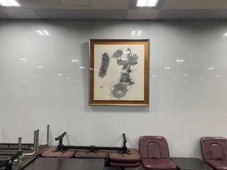

6棟

- 
5階建ての教室棟です。4棟と並ぶくらい学内でも古い建物ですが、全教室に多機能なAVシステムを完備しているなどとマルチメディア棟でもあります。大学院生の共同教室として使用されており、大学生は中々使用する機会も少ないですが、春の健康診断はこの6棟が使用されます。
6棟のココがスゴイ!!
あまの傘を知っていますか？
あまの傘は、学生が自由に使用することが出来るようにと学内に設置されている傘のことです。毎年、学生課に届けられる傘の忘れ物をどうにかして有効活用できないかという思いから、2003年、獨協大学の環境・国際団体「Deco」によって誕生しました。6棟以外にも学内の様々な場所に設置しているそうなので、見かけたら是非使ってみてはいかがでしょうか。